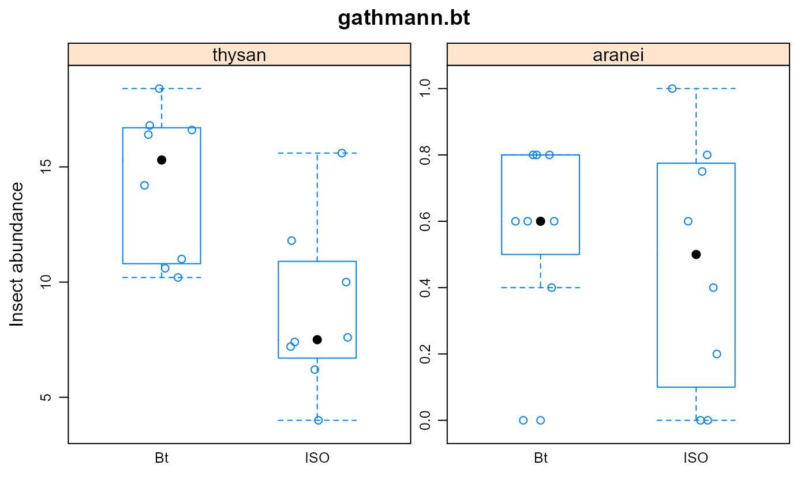

gathmann.bt.RdImpact of Bt corn on non-target species
A data frame with 16 observations on the following 3 variables.
gengenotype/maize, Bt ISO
thysanthysan abundance
araneiaranei abundance
The experiment involved comparing a Bt maize and a near-isogenic control variety.
Species abundances were measured for Thysanoptera (thrips) and Araneida (spiders) in 8 different plots.
Each response is probably a mean across repeated measurements.
Used with permission of Achim Gathmann.
L. A. Hothorn, 2005. Evaluation of Bt-Maize Field Trials by a Proof of Safety. https://www.seedtest.org/upload/cms/user/presentation7Hothorn.pdf
# \dontrun{ library(agridat) data(gathmann.bt) dat <- gathmann.bt # EDA suggests Bt vs ISO is significant for thysan, not for aranei libs(lattice) libs(reshape2) d2 <- melt(dat, id.var='gen') bwplot(value ~ gen|variable, d2, main="gathmann.bt", ylab="Insect abundance", panel=function(x,y,...){ panel.xyplot(jitter(as.numeric(x)),y,...) panel.bwplot(x,y,...) }, scales=list(relation="free"))if(0){ # ----- Parametric CI. Thysan significant, aranei not significant. libs(equivalence) th0 <- with(dat, tost(thysan[1:8], thysan[9:16], alpha=.05, paired=FALSE)) lapply(th0[c("estimate","tost.interval")], round, 2) # 14.28-8.72=5.56, (2.51, 8.59) # match Gathmann p. 11 ar0 <- with(dat, tost(aranei[1:8], aranei[9:16], alpha=.05, epsilon=.4)) lapply(ar0[c("estimate","tost.interval")], round, 2) # .57-.47=.10, (-0.19, 0.40) # match Gathmann p. 11 # ----- Non-parametric exact CI. Same result. libs(coin) th1 <- wilcox_test(thysan ~ gen, data=dat, conf.int=TRUE, conf.level=0.90) lapply(confint(th1), round, 2) # 6.36, (2.8, 9.2) # Match Gathmann p. 11 ar1 <- wilcox_test(aranei ~ gen, data=dat, conf.int=TRUE, conf.level=0.90) lapply(confint(ar1), round, 2) # .05 (-.2, .4) # ----- Log-transformed exact CI. Same result. th2 <- wilcox_test(log(thysan) ~ gen, data=dat, alternative=c("two.sided"), conf.int=TRUE, conf.level=0.9) lapply(confint(th2), function(x) round(exp(x),2)) # 1.66, (1.38, 2.31) # Match Gathmann p 11 # ----- Log-transform doesn't work on aranei, but asinh(x/2) does ar2 <- wilcox_test(asinh(aranei/2) ~ gen, data=dat, alternative=c("two.sided"), conf.int=TRUE, conf.level=0.9) lapply(confint(ar2), function(x) round(sinh(x)*2,1)) } # }